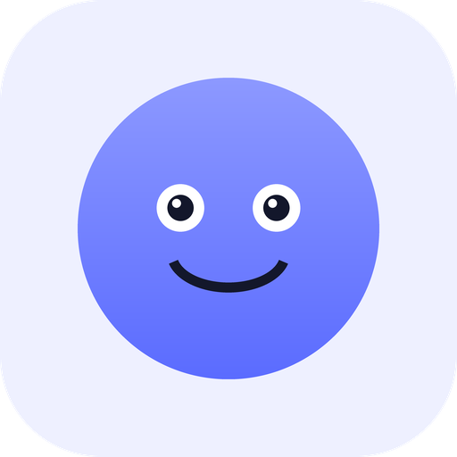

Talk BuddyBuddy sesli soru sorar, çocuk konuşarak cevaplar. Yanlış cevap hiçbir şey kaybettirmez: uygulama zorluğu kendisi düşürür, çocuk fonolojisini tanır ve ilerlemeyi uzmana raporlar.
Sağdaki telefon çalışan demodur: dokunun, dersi oynayın. Çevrimdışı çalışır; API anahtarı gerekmez.
Yanlış cevap hiçbir şey kaybettirmez. Üçüncü denemede asla başarısız olunmaz; telaffuz bölüm geçmeyi engellemez, yalnızca ölçülür.
Çocuk zorlanınca Buddy yavaşça tekrar modeller, ilk heceyi verir, sonra birlikte söyler.
“tedi” dediğinde “kedi” kabul edilir. Öne alma, durdurma, kayma, küme sadeleştirme gibi gelişimsel süreçler tanınır ve uzman paneline yazılır.
Yuvalı şablonlar ve ağırlıklı seçimle aynı ders iki kez farklı gelir. Leitner aralıklı tekrar ile zayıf sesler öne çıkar.
Türkçe fonolojik edinim sırasında: p/b/m'den r'ye, sonra kelime, cümle, hikâye ve duygu dünyası. 9 alıştırma türü.
Çocuk, veli (PIN), öğretmen (sınıf bazlı) ve uzman (danışan ve uyarılar) için ayrı paneller.
Beta 0.9.0. Telefonda “bilinmeyen kaynaklardan yükleme”ye izin vermeniz gerekir. APK debug anahtarıyla imzalıdır; Play Store sürümü değildir.
TalkBuddy-0.9.0.apkAynı ders motorunun (fonoloji, değerlendirme, diyalog) tarayıcı portu. Kurulum yok. Ses tanıma için Chrome veya Edge önerilir.
Demoyu açWindows .exe yoktur: Talk Buddy bir mobil uygulamadır; masaüstü karşılığı tarayıcıdaki demodur.
| Çocuk dedi | Hedef | Tespit | Karar |
|---|---|---|---|
| tedi | kedi | öne alma | geçti |
| ayaba | araba | kayma | geçti |
| ten | tren | küme sadeleştirme | geçti |
| köpek | kedi | — | tekrar |
README'deki doğrulanmış davranıştan alınmıştır.